I've just finished & released my new project, https://ekaya.vip, as part of the team at Ekaya.com.
This blog discusses the web app and its creation, similarly to my earlier review of the Angular medical record app, ECCR.
Vip is a web app that creates a profile page for a user showing her: verified personal details, credit score and bank statements, and character references.
The user can then share this profile with prospective landlords as an indication she would be a good tenant. Here's part of the profile page for a user: 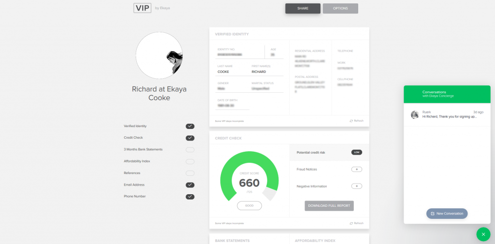
The screenshot below shows how a landlord (non-user of Vip) can email anyone asking them to create a profile for review: 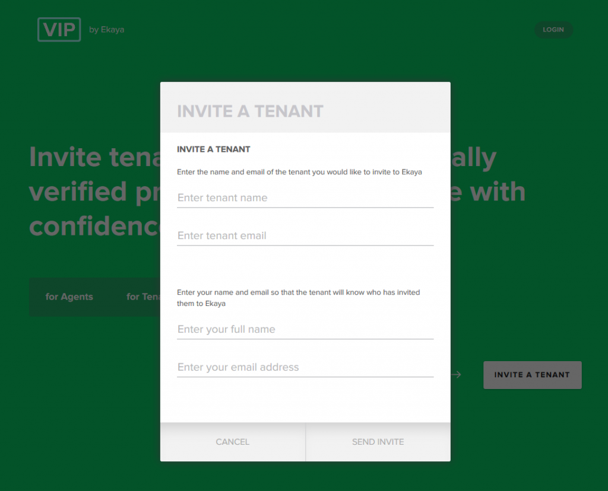
Finally, the image below shows bank login, part of the profile creation process: 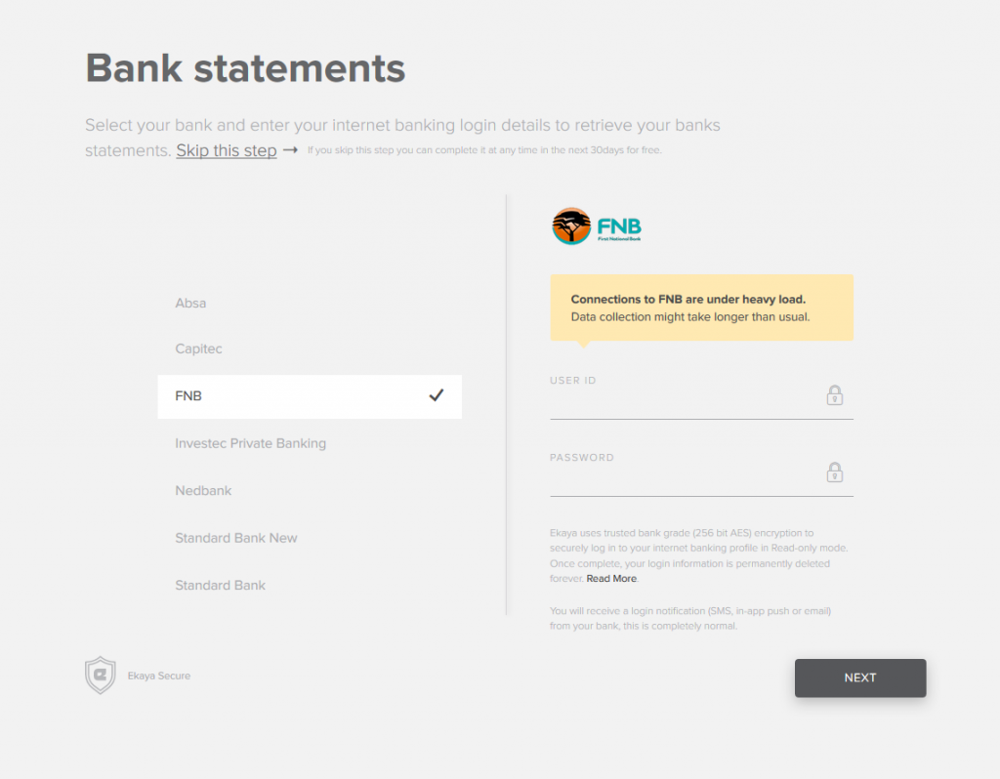
Currently it costs R99 to create a profile, and R49 to optionally refresh all your verified data after three months.
Our office was in leafy green Newlands, holding six programmers, two business people (one customer experience and one designer), and two customer support people. 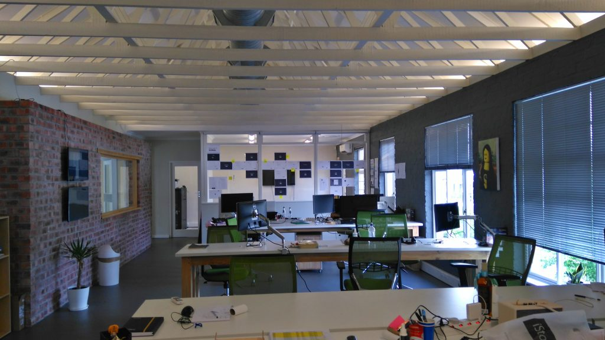
This was one of the best teams I've worked with: no rockstars, no hostility or insecurity, and no laziness. Everyone at the firm was passionate about software - always posting links to interesting tech articles and videos, discussing past- and side- projects, and generally having fun coding something beautiful.
The app has few screens - it's just a payment screen, some id verification question screens, bank login screens, the main profile screen, and sharing screens. Thus design was completed by the designer/CEO before coding began and all wireframes were small enough to fit on our office wall:
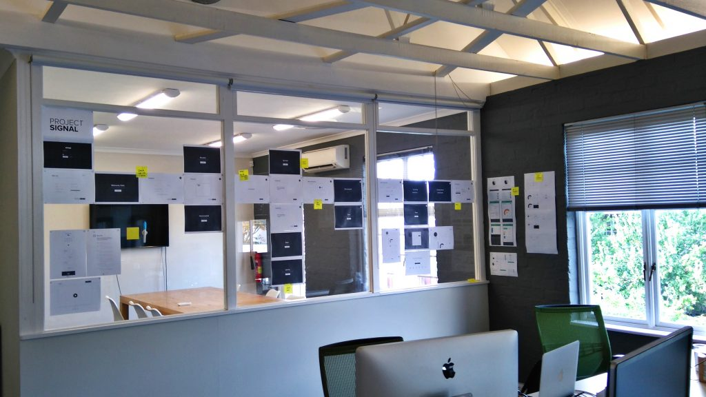 We hired a team in the Ukraine to create the CSS for our wireframes to save time. Which was a terrible idea. Old fashioned Bootstrap CSS is very hard to cut up and put into React components using CSS modules. Never again.
We tried out lots of online project management web apps, looking for the set of features we wanted at the best price:
Axosoft seemed decent and we trialled it for a month. 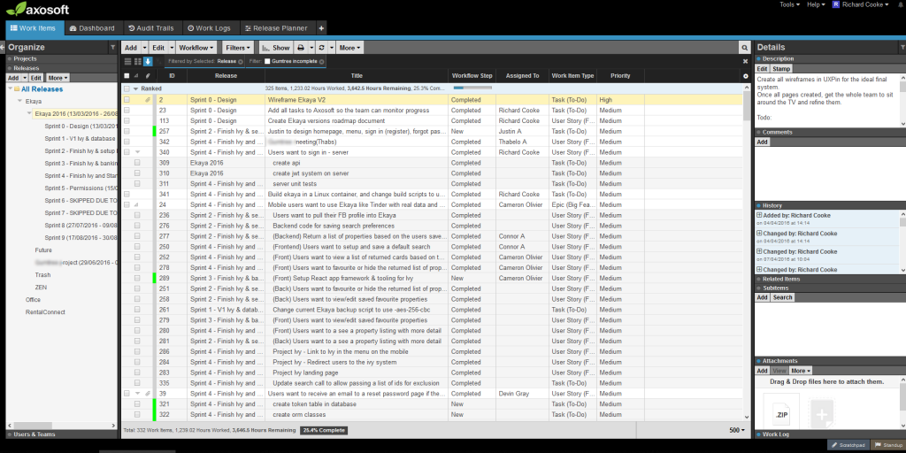
However it has serious flaws and we wouldn't recommend it because it:
Furthermore the automated time tracking and estimation features were hard to use. Even now I can't remember exactly what combination of estimated time, work logs, and work completed entries you are supposed to use generate correct graphs. Which is unfortunate as they look quite useful: 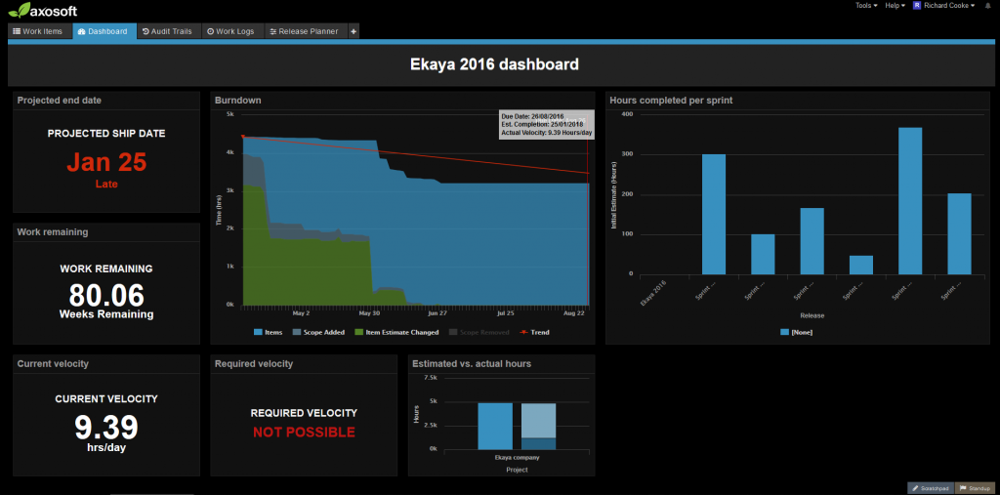
Since our time estimates as a team were unhelpful and Axosoft was cluttered we decided to try something completely different. We:
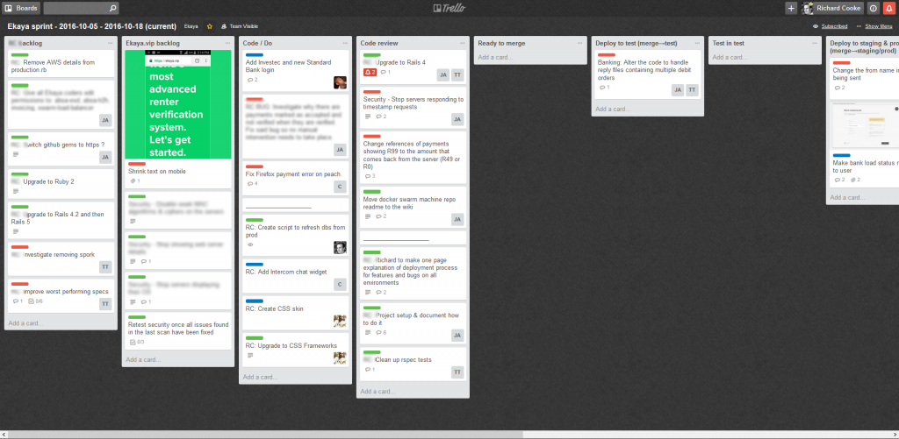
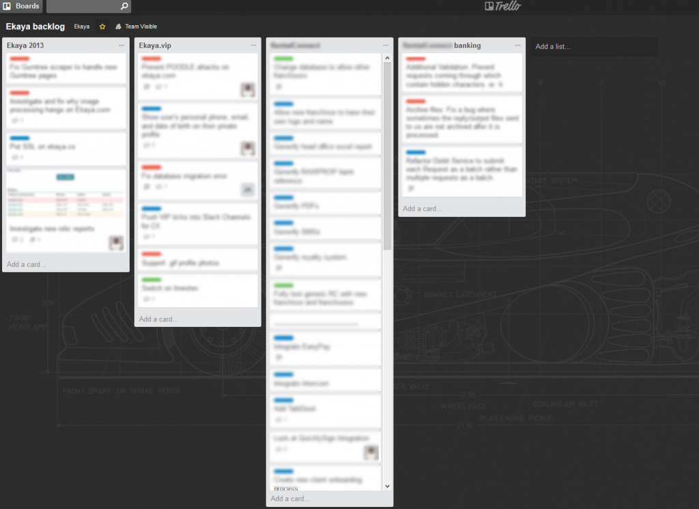
At the end of every sprint I made a new board with the date of that sprint and moved all our done and rejected cards into that board and closed it. Thus our current sprint board never closes, so people don't have to update their bookmarked urls and I didn't have to copy and paste lots of cards and columns.
We permanently displayed both boards on our TVs and had daily standups around them.
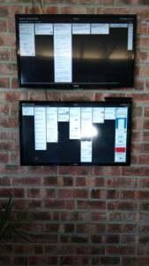
Standups happened whenever everyone had arrived at the office, sometimes only 11h30. When people were working from home they could Skype/Hangouts in, or we'd just skip a day's standup.
Tasks went from backlog to coding to code review to deploying to testing (done by our CXO / unoffical QA tester). We started off tackling tasks separately to get through them faster.
But I think this ended up making us slower than if we had collaborated and code reviewed more. At the end of of the project we switched to peer programming at least hour a day for those who were willing. And put every task through code review before deploying it.
I used to dislike this activity when I first tried it because:
With a few changes though I now am very happy with it:
All the coders have Apple PCs, except me. I find the Apple OS difficult to use, unpleasant, and their computers overpriced even with all their deficiencies compared to Windows computers.
So the company bought me a Windows laptop. It is far more powerful than the Apples in the office, at a fraction of the price. I installed Ubuntu on VirtualBox on it to program and had no problems with this setup.
Ubuntu is necessary to use the same shell scripts as the Apple machines, which Windows can't do easily just yet. I also found working in a VM advantageous at times because of its ability to save and restore images - especially before upgrading my system.
I used VirtualBox happily, except for one graphics bug. You need to download and use the guest additions ISO for 5.0.16 until this bug is fixed. Any images later than that version will cause graphics errors in VirtualBox Ubuntu with apps like Gitkraken, Atom, Chrome (and other Electron apps too I assume). Here's the ISO to use: http://download.virtualbox.org/virtualbox/5.0.16/VBoxGuestAdditions_5.0.16.iso
The Apples use Brew as their package manager, whereas Linux uses apt. Apt needs to run as root (all apps are installed globally) whereas Brew installs apps for the local user. This makes things like accessing a database different, as using Brew you don't need to set a password because your current user already has access.
In future to avoid these differences in setup I'd like to give Linuxbrew a try - a fork of Brew compiled for Linux.
We used the free version Slack for almost all team communication. It was my first time trying it, having used Gmail & Hangouts before. I like Slack's channels and ability to link to bots, like git commit. But I don't like that messages can whizz by ignored by users if they miss them, unlike email which has to be addressed consciously.
And I detest that that messages get deleted past a certain number, making searching for important old comments impossible. I'd stick with Gmail & Hangouts again in future I had the choice. 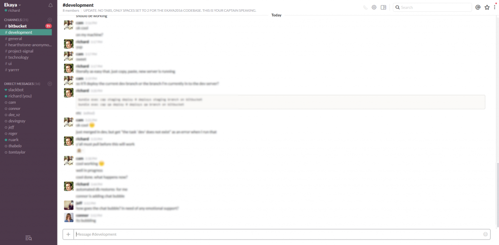
We stored all our passwords in the Passpack free version, including our config files for deployment. No passwords were kept in git, meaning we could open source our code safely at any point if we wished. Passpack worked well. 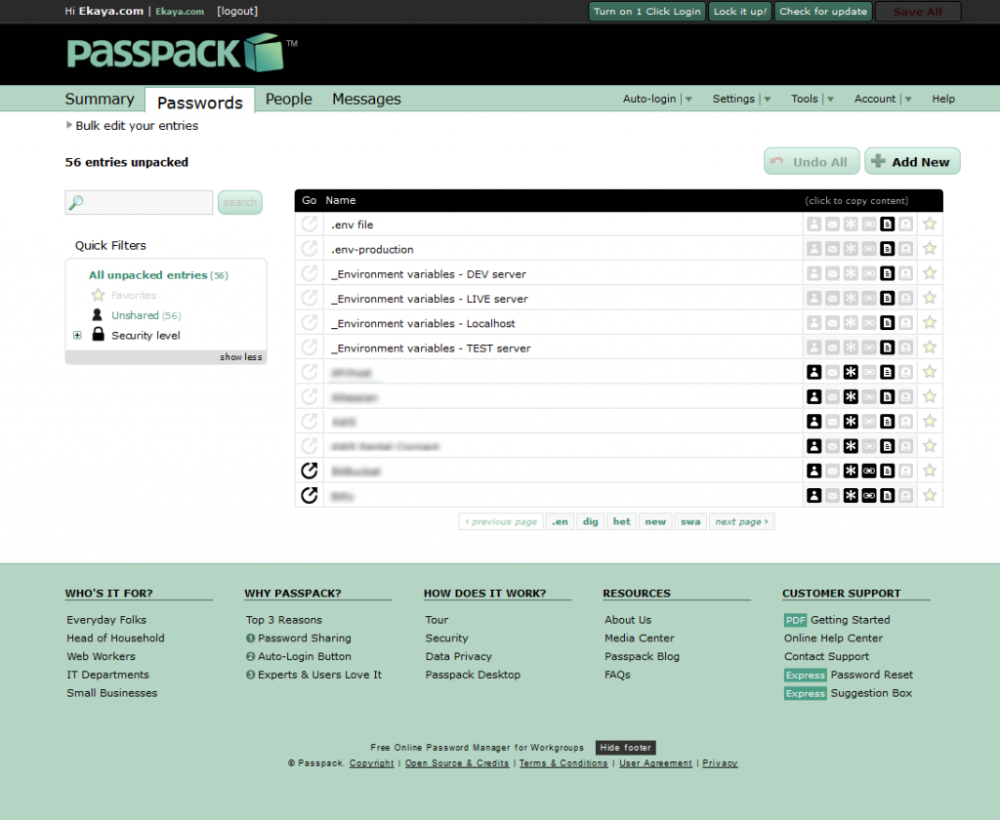
Our passwords were saved to environment variables on our server and not needed to be entered during deployment - as per the 12 factor app best practice guide.
We kept our repositories in Bitbucket. The only difference between Bitbucket and Github is that Bitbucket charges per user for an infinite number of repositories and Github charges per repository for an infinite number of users.
The former is clearly far more preferable for a firm with a set number of employees. 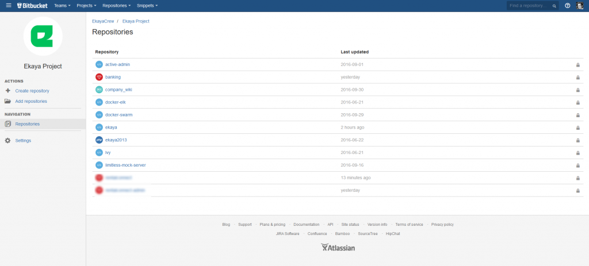
Peach Payments is a credit card payment gateway that is easy to use with a support team that responds quickly. The only problem I have with it is that they have no API for testing.
So if you want to write automated tests to see how your app behaves when payments fail or succeed for various reasons you are out of luck. Hopefully they'll add this useful feature someday.
Intercom provides the chat bubble on our app. Intercom's app provides a profile for each user with their full chat history, and any events or data our app has stored in Intercom for that user.
It can also send emails. A very useful tool I'd recommend.
We worked with a local partner to leverage Yodlee’s services and consumer credit checks via an API. The API had it’s problems though:
Gitkraken is the only cross platform git GUI, written in Electron. I prefer it to SourceTree, but perhaps not as much as Tortoisegit. But it worked well on my Linux machine.
Watching the other coders in the office struggle to recall and correct lists of git command line statements instead of clicking one button on a GUI was laughable. I'd definitely recommend Gitkraken to anyone in future. 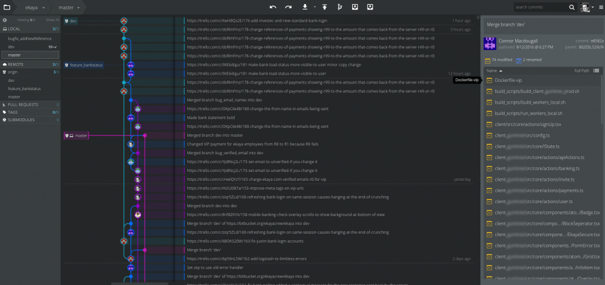
Two of us used Atom as our IDE (our language was Typescript). One used Jetbrains Webstorm. One used Visual Studio Code. And two used Sublime. We had no conflicts.
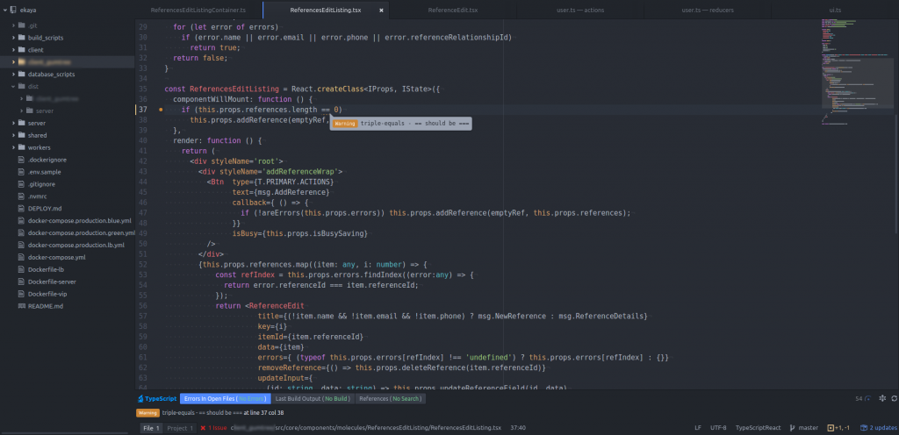
Atom worked perfectly for me. The Sublime users had difficulty installing the Typescript and linting plugins. And nearly all of us used Visual Studio Code for debugging the node server in compiled Javascript because it was powerful and easy to use.
I would not recommend Sublime. Sublime is significantly slower to code in, losing the power to jump directly to declarations in code, find usages, and refactor / rename easily. I did miss having Notepad++ on Ubuntu on several occasions when I wanted to record and run macros, and do clever regular expression search and replaces. But the handy thing about being on an Ubuntu VM was that I could swap back to Windows to run Notepad++ when necessary with one click.
We'd heard only good things about React & Redux & Typescript, so we chose those for the browser code. Typescript is wonderful in many ways:
For the server we had far more choices:
Typescript with node.js and Scala with Java were the clear top two choices. In the end we chose Typescript because:
We were happy with our choice.
We used Docker to create small rebuildable images to deploy our code to test and production. It's the an excellent technology and the way of the future.
There's nothing more to say - except perhaps that is difficult on your localhost in one regard for people using Apple or Windows pcs. If you pull your packages (e.g. npm, gems, nuget) off the Net every time your container builds then it's very slow to change a line of code and see what the effect is on your site immediately.
You can share a packages folder between your local machine and the docker machine if you're on Linux so you don't have to update packages every compile - but you can't on Apple/Windows, because the packages are built for a different operating system.
And also, the images take up quite a bit of space - better to have a big harddrive than a small SSD. I had no trouble with speed, but colleagues did have trouble with space.
At first we wrote simple deployment scripts for our dev server. They ssh'ed onto the server, copied across the code, and ran the dockerfile. For production the guy who was tasked with improving deployment first tried Kubernetes - as we'd heard it was the best. But he found it too hard and swapped to docker-swarm.
When I look at the docker-swarm code I still don't understand it - it's complicated stuff. But it works - we have always online blue/green deployments to production. I'd like to give Kubernetes a try in a future project.
I've assumed for years that spaces are dead - because tabs allow everyone to set their preferred length of indentation. But the team eventually decided to pick two spaces (or soft tabs) as the standard as it allows aligning columns and is the Facebook standard. It really made no difference to anything - once everyone had set their darn IDE to the same setting.
Our logging is the ELK stack (ElasticSearch, Logstash, Kibana). I didn't work on it so I can't comment.
We used Sendgrid to send emails, queued in RabbitMQ (a base Docker image).
Sendgrid works well, and has templates.
We used Postgres.
We used Flyway.
Sequelize is the ORM for Node. An ORM's main benefits are:
The problem with Sequelize is it's very poorly documented. I couldn't figure out how to properly associate linked tables in complex cases (where Sequelize presumes you'll use their format, and we used our own).
So we gained benefit number 1, but not so much numbers 2 and 3 - as we ended up writing some custom SQL and conversion code anyway. I'd use Sequelize again, but only until something better and simpler arrives.
This was our API webserver (like express or koa). We chose it as it's made by Walmart for massive speed. It works well.
But I'm sure the others would be fine too - as they don't really do that much work. I did miss the power and in-the-box features that frameworks like Laravel provide. Strongloop didn't look appealing.
But in my next project I'd love to try Adonis.js.
Having used Linux & open source tools now, after being a .NET programmer for nine years, I wouldn't go back to Windows. Everything is so much easier on Linux:
However I don't like the generally dynamically typed tendency in old open source languages like Ruby & Python. Python now has types, as does Typescript, and PHP does partially too.
But languages like Ruby I find to hard to use: no find references, go to definition, or refactor, make navigating code incredibly tedious.
I was not involved in writing the copy nor proofreading it. I personally dislike the German looking title case the app uses. So if you do too, please don't judge me by the app's text.